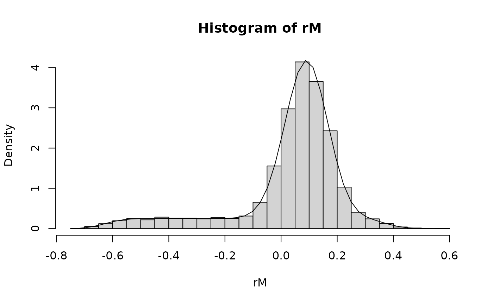

Density, cumulative distribution function, quantile function and random number generation for the difference of two mixture distributions.
Usage
dmixdiff(mix1, mix2, x)
pmixdiff(mix1, mix2, q, lower.tail = TRUE)
qmixdiff(mix1, mix2, p, lower.tail = TRUE)
rmixdiff(mix1, mix2, n)Arguments
- mix1
first mixture density
- mix2
second mixture density
- x
vector of values for which density values are computed
- q
vector of quantiles for which cumulative probabilities are computed
- lower.tail
logical; if
TRUE(default), probabilities are P[X <= x], otherwise P[X > x].- p
vector of cumulative probabilities for which quantiles are computed
- n
size of random sample
Details
If \(x_1 \sim f_1(x_1)\) and \(x_2 \sim f_2(x_2)\), the density of the difference \(d \equiv x_1 - x_2\) is given by
$$f_d(d) = \int f_1(u) \, f_2(u - d) \, du.$$
The cumulative distribution function equates to
$$F_d(d) = \int f_1(u) \, (1-F_2(u-d)) \, du.$$
Both integrals are performed over the full support of the
densities and use the numerical integration function
integrate.
Examples
# 1. Difference between two beta distributions, i.e. Pr( mix1 - mix2 > 0)
mix1 <- mixbeta(c(1, 11, 4))
mix2 <- mixbeta(c(1, 8, 7))
pmixdiff(mix1, mix2, 0, FALSE)
#> [1] 0.8817696
# Interval probability, i.e. Pr( 0.3 > mix1 - mix2 > 0)
pmixdiff(mix1, mix2, 0.3) - pmixdiff(mix1, mix2, 0)
#> [1] 0.6005884
# 2. two distributions, one of them a mixture
m1 <- mixbeta(c(1, 30, 50))
m2 <- mixbeta(c(0.75, 20, 50), c(0.25, 1, 1))
# random sample of difference
set.seed(23434)
rM <- rmixdiff(m1, m2, 1E4)
# histogram of random numbers and exact density
hist(rM, prob = TRUE, new = TRUE, nclass = 40)
curve(dmixdiff(m1, m2, x), add = TRUE, n = 51)

# threshold probabilities for difference, at 0 and 0.2
pmixdiff(m1, m2, 0)
#> [1] 0.2467158
mean(rM < 0)
#> [1] 0.2471
pmixdiff(m1, m2, 0.2)
#> [1] 0.9025757
mean(rM < 0.2)
#> [1] 0.907
# median of difference
mdn <- qmixdiff(m1, m2, 0.5)
mean(rM < mdn)
#> [1] 0.504
# 95%-interval
qmixdiff(m1, m2, c(0.025, 0.975))
#> [1] -0.5257954 0.2877204
quantile(rM, c(0.025, 0.975))
#> 2.5% 97.5%
#> -0.5232376 0.2862964